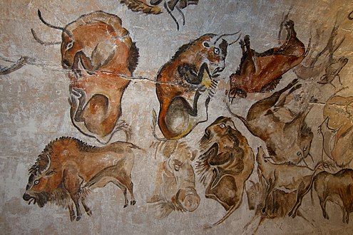

")
اہل مذہب کا ہتھکنڈہ یہ ہے کہ بحث میں وہ کئی ملینز سال پہلے ہونے والے ارتقا میں "شک و شبہات" کو ڈھونڈ کر اسکا فائدہ اٹھاتے ہیں۔ مثلاً ان کا مطالبہ ہوتا ہے کہ ارتقا کی ہر ہر درمیانی کڑی کا فاسل ریکارڈ پیش کیا جائے گا تب ہی وہ اسے تسلیم کریں گے۔ مگر ایسےکئی ملین سال پرانے ہر ہر کڑی کے تمام فاسلز ریکارڈ کا ملنا ناممکن ہے۔
اہل مذہب کے اس ہتھکنڈے کا حل یہ ہے کہ ان سے "ماضی قریب" میں ہونے والے ارتقا کے متعلق سوال پوچھے جائیں، جہاں یہ شکوک و شبہات کا فائدہ اٹھا کر بھاگنے سے قاصر ہو جائیں گے۔
مثلاً آج کے "Modern Dogs" اہل مذہب کے حلق میں جا کر اٹک گئے کہ جسے یہ نگل سکتے ہیں اور نہ اگل سکتے ہیں۔ اسکی وجہ یہ ہے کہ ماڈرن کتے ابھی Recently ہی grey wolf سے ارتقا پذیر ہوئے ہیں۔ ان Modern Dogs کا قدیم ترین غیر متنازیہ فوسل صرف 14200 ہزار سال پرانا ہے (لنک)۔ جبکہ ماڈرن کتوں کے مقابلے میں wolf اور coyotes کے فاسل ریکارڈ 300،000 سال پرانے تک ملتے ہیں، اور پھر ان کے جدِ اعلیٰ Canis اور پھر Carnivoramorpha کے کئی ملین سال پرانے فوسل ریکارڈ ملتے ہیں۔
سائنس کے مطابق ماڈرن کتوں کےپرانے فاسلز اس لیے نہیں ملتے کیونکہ کتوں کا Recently ہی ارتقا ہونا شروع ہوا تھا۔ سائنسی تحقیق کے مطابق بھیڑئیے کی genetic divergence صرف 20 ہزار تا 40 ہزار سال پہلے ہونا شروع ہوئی تھی (لنک)۔
جبکہ کتوں کی سب سے پرانی پینٹنگ یا Rock Art صرف 8 ہزار سال پرانی ہے (لنک)۔ تقابل کے لیے سمجھئے کہ سینکڑوں جانوروں کی تصاویر 40 ہزار سال تا 52 ہزار سال پرانی ہیں، جن میں بہت سے ایسے جانور بھی شامل ہیں جو اب نایاب ہیں۔
پھر 40 ہزار سال سے لے کر 8 ہزار سال کے درمیان تو بے تحاشہ غاریں ملیں کہ جہاں جانوروں کی پینٹنگز موجود تھیں، مگر ماڈرن کتا ان سب پینٹنگز سے غائب تھا۔
اس کی وجہ یہ ہے کہ کتے کا ارتقا صرف چالیس تا بیس ہزار سال پہلے ہی شروع ہوا۔ ارتقا کے بعد ان کی domestication میں پھر مزید وقت لگا۔ شروع میں یہ صرف کچھ مخصوص علاقوں تک محدود رہے اور ان کی تعداد بہت تھوڑی تھی۔ اسی وجہ سے پہلا غیر متنازعہ فاسل صرف 14 ہزار سال پرانا مل سکا، جبکہ پہلا Rock Art یا پینٹنگ صرف 8 ہزار سال پرانی مل سکی۔
سائنس کے مقابلے میں جب مذہب والوں سے سے سوال کیا جاتا ہے کہ 14200 ہزار سے قبل ماڈرن کتوں کے غیر متنازعہ فاسلز کیوں نہیں ملتے اور وہ یکایک کیسے 14 ہزار سال پہلے وجود میں آ جاتے ہیں، جبکہ بھیڑیے اور انکے جد اعلیٰ canis کے بے تحاشہ فوسلز ملتے ہیں جو کہ کئی ملین سال پرانے تک ہیں۔ اہل مذہب اس پر جواب دینے کی بجائے اپنا منہ بغل میں دے لیتے ہیں۔ ان کے پاس اس سوال کا کوئی جواب نہیں ہوتا۔ زیادہ سے زیادہ ان کی طرف سے یہ بہانہ پیش کیا جاتا ہے کہ ماڈرن کتے کے پرانے فاسلز شاید اس لیے نہیں ملتے کیونکہ فاسلز بننا ایک مشکل عمل ہے اور لازمی نہیں کہ ہر سپیشیز کے پرانے فاسلز مل سکیں۔
تقابل کے لیے سمجھیے کہ مذہب والے ڈیمانڈ کرتے ہیں کہ سائنس انہیں کئی سو ملین سال پرانے فاسلز ان جانوروں کے دکھائیں جو آدھے مچھلی اور آدھے خشکی پر رہنے والے جانور تھے۔ انہیں یہ missing link کا نام دیتے ہیں۔ سائنٹسٹ ان مذہب والوں کو بہت سمجھاتے ہیں کہ لازمی نہیں کہ جو آبی سپیشیز پانی سے نکل کر زمین پر آئی ہوں اور آدھی مچھلی کی طرح دکھائی دیتی ہوں اور گلپھڑے رکھتی ہوں، بلکہ ہو سکتا ہے کہ پانی میں ہی ان کے گلپھڑے پھیپھڑوں میں تبدیل ہو گئے ہوں، مثلاً ڈولفن یا وہیل جن کے گلپھڑے نہیں بلکہ پھیپھڑے ہیں، یا پھر دریائی گھوڑے جو زمین اور خشکی دونوں میں رہتے ہیں۔ دوسرا یہ کہ ہر سپیشیز کے کئی سو ملین سال پرانے فاسلز ملنا ناممکن ہے کیونکہ فاسلز کا بننا ایک بہت مشکل عمل ہے۔ مگر یہاں اہل مذہب سائنس کو معاف کرنے کے لیے تیار نہیں اور انکا مطالبہ پھر بھی جاری ہے کہ سائنس کئی سو ملین سال پرانے فاسلز پیش کرے، جبکہ وہ خود ماڈرن کتے کے صرف 14 ہزار سال سے قدیم فاسلز فراہم کرنے سے معذور ہیں۔
یہی سوال ماڈرن انسان کے فوسلز کے حوالے سے بھی اٹھتا ہے۔ ماڈرن انسان کے فوسلز بھی بہت زیادہ پرانے نہیں ملتے۔ چنانچہ مذہب والوں نے بہانہ بنایاکہ آدم کو کچھ ہزار سال قبل ہی اللہ نے براہ راست آسمان سے نازل کر دیا اس لیے انسان کے پرانے فاسلز نہیں ملتے۔ (سائنس کے مطابق یہ بہانہ غلط ہے کیونکہ ماڈرن انسان کے جد اعلیٰ کے کئی ملینز سال پرانے فاسلز ملتے ہیں)۔
ماڈرن انسان کے مقابلے میں کتوں کا ارتقا تو اور بہت بعد میں ہوا۔ چنانچہ اب کتے جا کر مذہبی حضرات کے گلے میں پھنس گئے۔ وہ اس سوال سے اس وقت تک نہیں نکل سکتے جب تک وہ مان نہ لیں کہ آسمان میں کتوں کے باوا آدم کی پسلی سے کتوں کی اماں حوا پیدا کئی گئی، جس نے کتوں کے باوا آدم کو بہکایا اور اس کے نتیجے میں کتوں کا باوا آدم بھی براہ راست 14 ہزار سال پہلے زمین پر نازل ہو کر کتوں کی اماں حوا کی اولاد سے انسیسٹ پر لگ گیا، اور آج تک کتوں میں یہ انسیسٹ جاری ہے۔